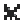
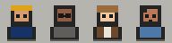
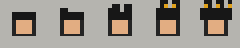
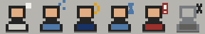

DEMO BRIEFCASE
00 / Operating character
A compact office shell that tells the truth about work.
Warm grey hard edges carry structure. Navy marks selection. Amber marks verified activity. Pixel workers clarify roles without replacing names, model labels, reasoning text, or runtime state.
01 / Tokens and material
One primitive palette, explicit product roles.
Every swatch below is rendered locally from the portable core and semantic contract.
Core palette
26 primitivesSemantic roles
21 mapped rolesCanvas / level 0application.canvas
Shell / level 1shell.surface
Inset / level 2surface.inset · soft border
Raised / level 3surface.raised · strong border
Typography scale
24 / Office systems specimen
16 / Task folder title
13 / CONTROL LABEL · STRONG
12 / Dense body copy preserves clarity at workstation scale.
11 / State text · updated just now (demo)
10 / STRUCTURED METADATA ONLY
12 mono / demo/session/turn-04
02 / Controls and state
Hard edges, visible focus, redundant status.
Controls are native HTML in this specimen. Hosts own persistence and side effects.
Buttons and input
Gallery fixture. No data is saved.Tabs
Structured state remains primary.
Event spans drive transient activity.
Only verified outputs enter the tray.
Status light contract
- Idle
- Working
- Waiting
- Success
- Error

Offline
Interactive specimen
Worker state translator
Buttons change presentation only. The live region always names the mock state.
Demo runtime: Idle
03 / Pixel icon library
Nineteen local SVGs across four supported sizes.
Each source uses an integer 24-unit viewBox, explicit metadata, and no external font or image.
04 / Composable workers
Five layers, not a combinatorial image dump.
Base anatomy + persona + reasoning hair + activity state + optional prop.
Base

Persona
Hair + text
Activity + textProp
24 px
32 px
48 px
05 / Office objects
Metaphors stay bound to authoritative objects.
All labels and counts in this section are invented gallery fixtures.
3 folders
06 / Host compositions
Same AA language, different host semantics.
These are static layout studies. They import no Superset or DSH code.
DEMO COMPOSITION A
Superset-adapted host mapping
Rail | Workspace | InspectorDEMO WORKSPACE
DSH adapter spike
Selected workspace context. Runtime facts would arrive through the existing host projection.
> verification boundary: portable UI only
DEMO COMPOSITION B
AA Office for DSH
Sidebar | Conversation | DetailsCONVERSATIONSession → Work Folder
Approval requiredSTRUCTURED DEMO APPROVAL
Pending demo decision
Allow one fixture write?
Tool: files.write · Target: ./demo-output/report.txt
Verification footer
Static by design.
- No framework imports
- No host modules
- No remote assets
- No official DeepSeek marks
- Reduced-motion fallback
- Structured demo labels
Source pins and license boundary are documented in the portable manifest and provenance audit.